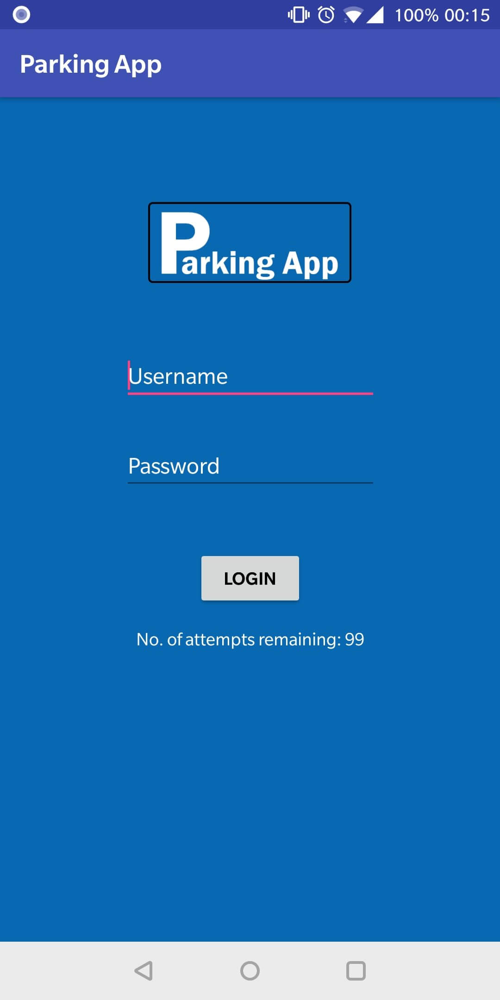
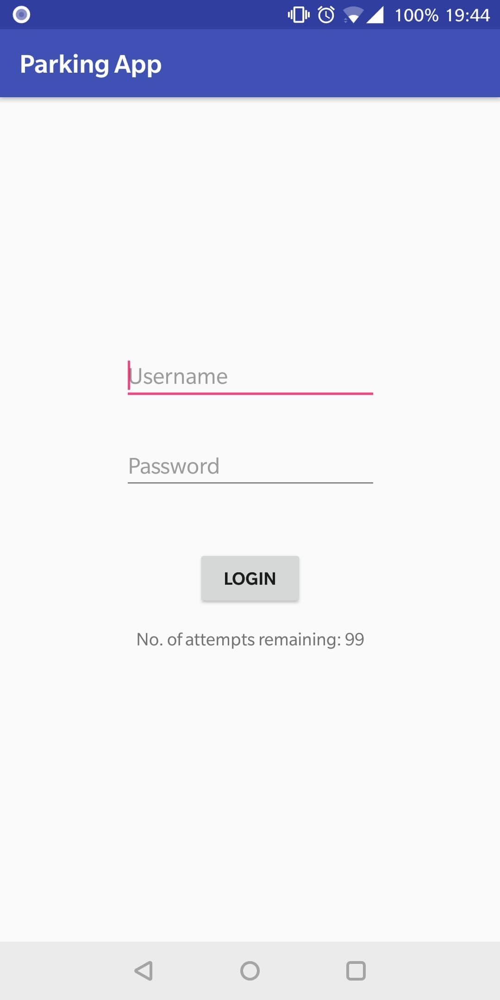
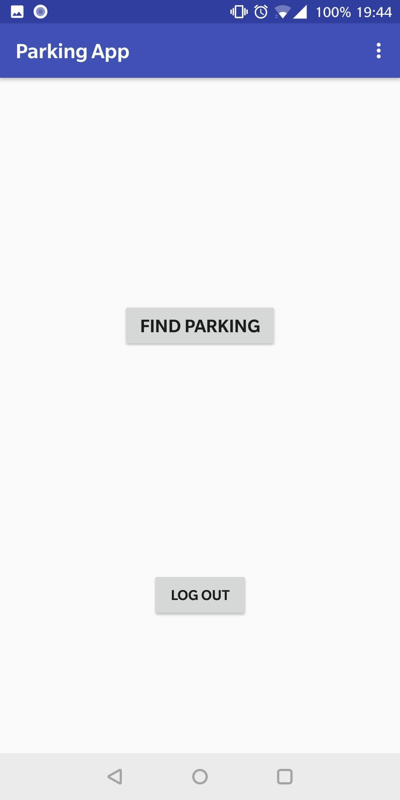
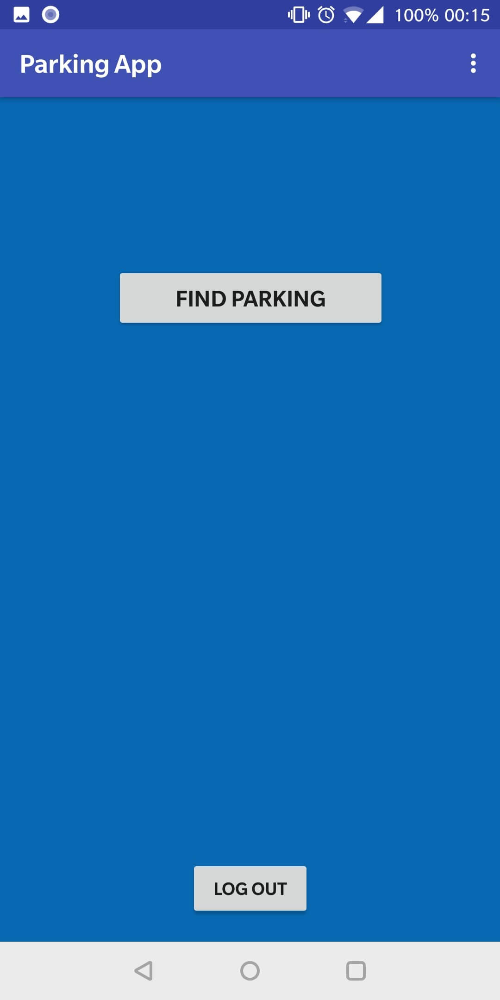
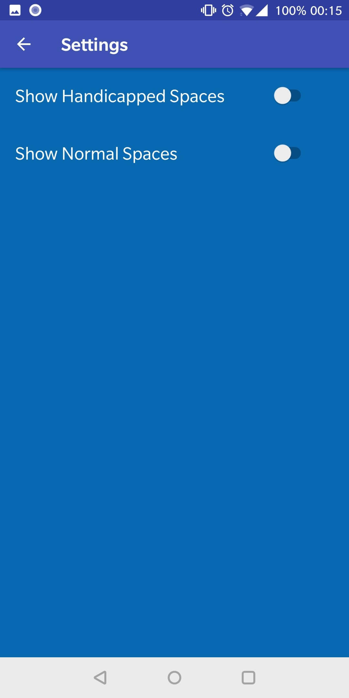

Projekter
-
Parking App - [Concept]
App Beskrivelse:
Parkerings app, en app der viser hvor mange parkeringsbåse der er. Så vil man også kunne se hvad for nogle er handicap parkeringspladser. Så vil man have et kort, hvor man kan se hver enkelt bås, tegnet ind på et kort. Hvor brugere så skulle kunne åbne app’en og tegne båsen ind, så den vil blive tegnet på kortet, så skal man kunne vælge om det er en almindelig parkering eller handicap. Og så får man også en menu hvor man kan skrive ind, hvornår man kan holde der, hvilket tidsrum man må holde der, og hvad dage man må holde der.Brianstorm af navne:
- Parkerings Guiden
- Car Parking
- Where to park
- Park your carProblemstilling:
Hvordan kan vi informere folk om hvor man kan parkere?App Feature Idéer:
- Korporer GPS så man kan tegne en bås ind. (F.eks ligesom HTC Vive Play-Area)
- Rabatter med forskellige parkerings firmaer.
- Alle skal kunne bruge app’en. Men fordele ved at købe medlemskab.Gennemgang af app'en:
Man installere app’en, og når man åbner den så kan man logge ind med en konto, eller logge ind som gæst. Man kommer så ind til en menu hvor der står “Kort – Find parkering – Rabatter - Abonnement – Indstillinger – Hjælp – Log ud”.Kort:
- Består af hele kortet over Danmark, hvor den viser der hvor man er lige nu. Hvor man så kan kigge rundt på kortet, og se de forskellige parkeringspladser.Find parkering:
- Her kan man så en adresse ind, hvor efter den så finder de 5 nærmeste parkeringspladser (parkerings steder).Rabatter:
- Her kan man se forskellige rabatkuponer, som parkerings firmaer har udgivet via et samarbejde med app’en.Abonnement:
- Dit månedlige abonnement med app’en, her kan man se hvornår man har abonneret og hvornår næste månedlige betaling kommer.Indstillinger:
- Her kan man ændre tema fra dag til nat tema. Man skal kunne slå parkeringshuse fra, så de ikke kan ses på kortet. Måske ændrer farve på parkeringsbåsene.Hjælp:
- Kundeservice (via e-mails). Måske telefon kundeservice i fremtiden. Her kan man også se om copyright, og betingelser.Log ud:
- Her logger man ud, så man kan gå ind på en anden bruger.Krav:
- Gratis (fordele ved at betale for app'en)
- Nem at bruge
- En simpel brugerfalde
- Tigængelig på Andriod og iOS

Her ser du den nyeste version jeg lavede.Her ser du alpha versionen, altså starten af min app.

Det eneste man kunne var at logge ind og ikke andet.Her ser du menuen i min app i alpha.

Appen var meget simpel her i starten, jeg havde ikk gjort så meget ud af udseendetHer ser du startsiden af min beta version, hvor jeg havde gjort mere ud af appens udseende.
Her kan man se jeg har lavet nogle flere menuer, oppe i højre hjørne er der en dropdown menu.

Hvor man kan se Settings og About og interagere med dem.Her ser du Settings menuen, hvor man kan slå handicapped parkerings pladser fra, samt normale parkerings pladser fra.
Her ser du et kort over verdenen, hvor man så skulle kunne se et overlay, af parkerings pladser.
Så man fik en idé om hvor der er mulighed for parkering.